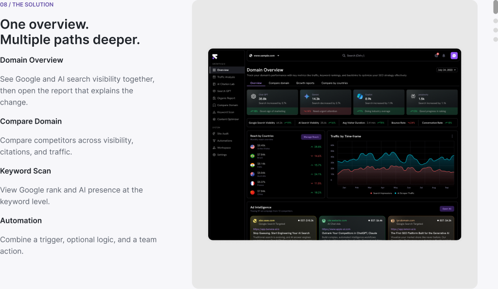
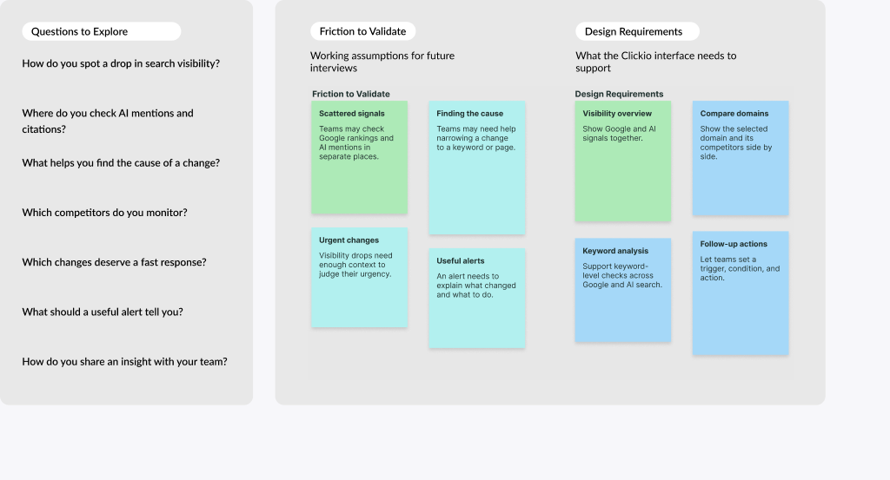
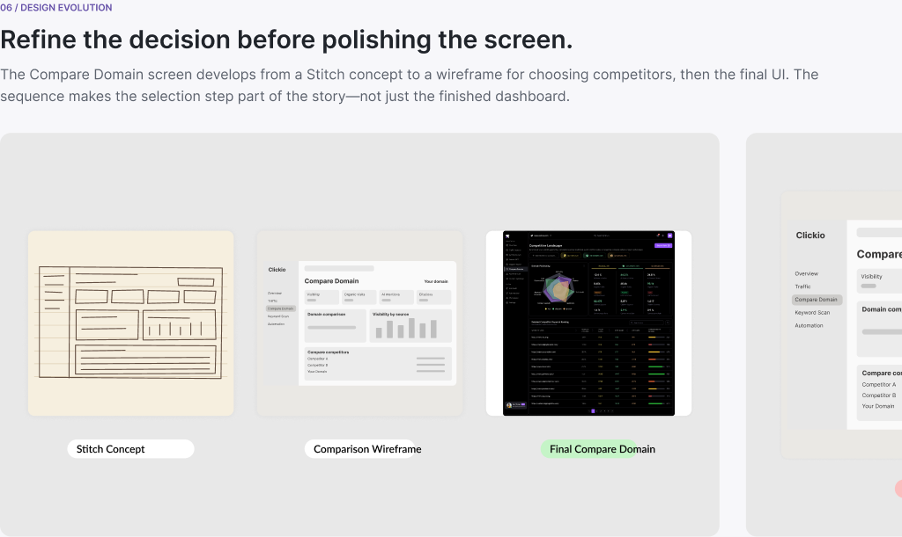
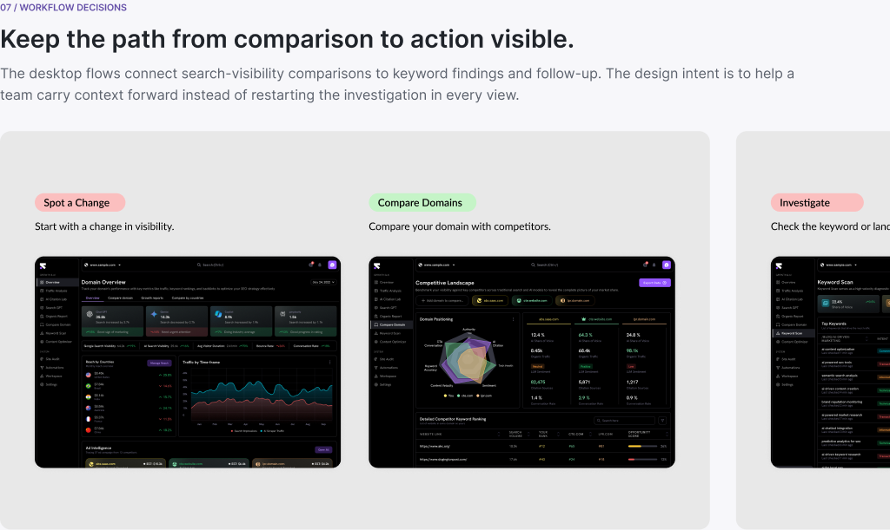
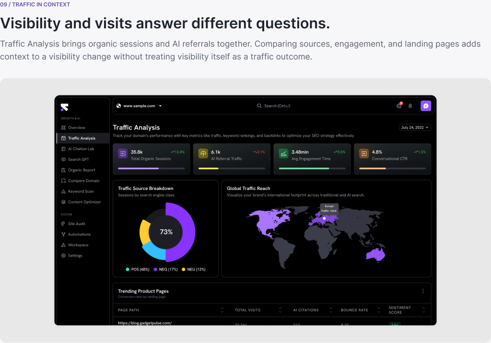
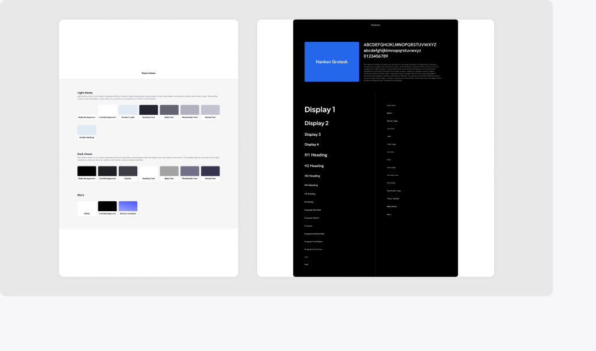

Clickio
From “our visibility changed” to “here’s what to investigate.”
SEO and marketing teams need to understand where their brand appears on Google and in AI search. I designed Clickio to connect high-level visibility changes directly to keyword investigations and team follow-ups.

A changing metric is a signal. It is not yet a next step.
Search visibility shifts across channels. The challenge was to connect Google and AI visibility signals to an investigation path, so teams can decide what deserves attention rather than stop at the dashboard.
Support the quick task and the bigger picture.
Different users come to the experience with different intents. The interface needs to support immediate actions without fragmenting the larger journey.
SEO Specialists
Investigate sudden rank volatility and algorithm shifts. Need granular keyword drill-downs, snippet tracking, and competitor overlap.
Marketing Leads
Translate ranking changes into content priorities and resource allocation. Need executive summaries and automated change alerts.
What changed? Why does it matter? What next?
I used these questions to frame the journey from noticing a visibility change to investigating its context and choosing a follow-up. This is a design framing exercise, not a claim of completed user research.

Connect the overview to the evidence behind it.
I reviewed the path from search-visibility metrics to competitor, keyword, and traffic details. The focus became making those investigation routes legible rather than treating each report as an isolated destination.
Compare different ways into the same investigation.
I used Stitch to explore two starting points for the desktop workflow. These concepts helped frame the relationship between the high-level overview and the more focused analysis views.

Refine the decision before polishing the screen.
The Compare Domain screen develops from a Stitch concept to a wireframe for choosing competitors, then the final UI. The sequence makes the selection step part of the story—not just the finished dashboard.

Keep the path from comparison to action visible.
The desktop flows connect search-visibility comparisons to keyword findings and follow-up. The design intent is to help a team carry context forward instead of restarting the investigation in every view.
Start with a change in visibility.
Users can quickly navigate contract metadata/summa
One overview. Multiple paths deeper.
Domain Overview

Visibility and visits answer different questions.
Traffic Analysis brings organic sessions and AI referrals together. Comparing sources, engagement, and landing pages adds context to a visibility change without treating visibility itself as a traffic outcome.
Three views. Three questions to investigate.
Compare Domain adds competitive context. Keyword Scan looks at rank and AI presence. Traffic Analysis examines visits and engagement. Each view contributes a different piece of the investigation.

Dense information needs a consistent visual language.
Hanken Grotesk, light and dark palettes, and reusable tables, tabs, and filters form the Clickio library. Shared patterns keep the analysis views coherent as the amount of data grows.
Make the alert part of a workflow, not another interruption.
The Automation concept combines a trigger, optional logic, and a team action. The intent is to make a visibility change actionable; usefulness and notification clarity still need to be tested.
Choose a trigger
Start the workflow when a tracked metric changes.
Choose a team action
Send a team notification when the trigger and condition match.
The investigation path is designed. Its usefulness is the next question.
The work connects an overview, analysis views, and an automation concept. It does not establish improved search performance or team efficiency. Next I would test whether specialists can explain a change and leads can set up an alert they understand.
What to Validate Next
Feedback from leaders and partners I worked with o
Charles stepped in without hesitation and delivere
SEO Specialist Task